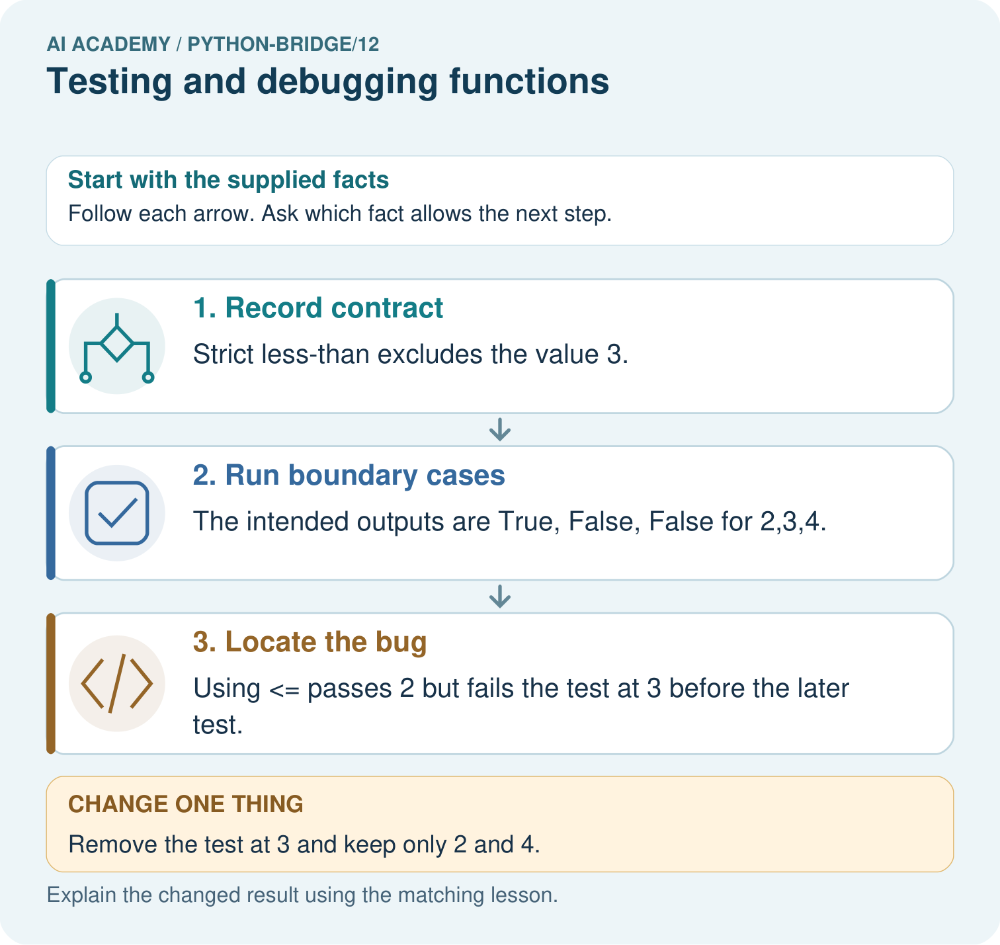

AI Academy · Python readiness bridge · Teacher guide
Testing and debugging functions
Learn to understand, design, build, test and explain AI systems responsibly.
Project: Python readiness portfolio
Teacher guide · 1 of 8
Prepare the purpose, prerequisites and materials
Teach the learning cycle
Primary target: Design revealing tests for a function
| Session | Sequence and minutes | Resources |
|---|---|---|
| Session 1 · Understand · 45 min | 0–7: recall and prerequisite; 7–15: inspect the concrete case and predict; 15–30: teacher models the worked trace; 30–40: learners explain a step using the text and visual; 40–45: check the core idea. | Sections 1–6; record the brief recall in the workbook. |
| Session 2 · Practise · 45 min | 0–5: retrieve the procedure; 5–15: W2 completion practice; 15–23: explain and check with a partner; 23–30: each learner answers the misconception check; 30–40: targeted reteaching or a harder variation; 40–45: prepare the investigation. | Sections 7–10; use the matching workbook W2 and misconception check. |
| Session 3 · Investigate and transfer · 45 min | 0–5: retrieve the decision rule; 5–20: investigate or trace; 20–30: start the independent case; 30–38: connect the project; 38–43: act on feedback; 43–45: plan the return check. | Sections 9 and 11–14. Give extra time to finish the full task set; use Section 15 when the week includes a coding lab. |
This is a starting allocation of 135 minutes, not a validated duration. Preserve all named topics. Schedule extra time for connected examples, the full investigation, independent cases and project building. Repeated copies of a case share one recorded attempt; they are not new evidence.
Case exposure check: this source example appears in ai-2/6, python-bridge/12. Reuse a familiar case for recall or modelling; verify that the case used to assess transfer has not already received feedback.
Retrieval answer guidance
Reading structured data
Without opening the old lesson, explain one key idea from Reading structured data. Give an example and a mistake that the idea helps you avoid.
Look for: Process a list of records consistently
Reference example, not the only acceptable wording: There are 2 records. The second has 0 spare spaces.
Return values and local state
Without opening the old lesson, explain one key idea from Return values and local state. Give an example and a mistake that the idea helps you avoid.
Look for: Use a returned value in a later calculation
Reference example, not the only acceptable wording: result is 9 and doubled is 18. Nothing is displayed by these assignments or the returning function. print(doubled) would display 18.
Loops and trace tables
Without opening the old lesson, explain one key idea from Loops and trace tables. Give an example and a mistake that the idea helps you avoid.
Look for: Trace variable values before and after each loop iteration
Reference example, not the only acceptable wording: 2, 3 and 4; the stop value is excluded. The body runs three times.
Teach Week 12 as a two-session investigation using fictional data. A function can pass one example by coincidence. Start with a written rule, calculate expected results independently, and include ordinary, zero and boundary cases. We will test a subtraction function under the contract 0 <= used <= capacity. Assess the three stated outcomes through the independent task, not by copying the worked result.
Outcomes
Design revealing tests for a function
Compare expected and actual results
Repair a defect and rerun earlier cases
Preparation
Python 3 editor with a fresh local practice file
Paper trace table and the student workbook
Fictional input records from this lesson; no real student identifiers
Prerequisite answer
7.
End goal for the pictorial case
Trace testing and debugging functions and explain the changed program before running it.
This added worked case illustrates the week’s main idea. Retain all original and connected topics; schedule its practice within the teaching cycle.
Teacher guide · 2 of 8
Explain and model the mechanism
A function can pass one example by coincidence. Start with a written rule, calculate expected results independently, and include ordinary, zero and boundary cases. We will test a subtraction function under the contract 0 <= used <= capacity.
Each parenthesized group is a tuple, an ordered group of values. The loop unpacks each group into three names. Equality compares the actual result to the independently calculated expected result. The worked script prints True three times. An assert actual == expected could instead stop at the first mismatch with AssertionError.
| Term | Meaning |
|---|---|
| Test case | Inputs and an expected result |
| Boundary | An edge of a permitted range |
| Regression | A previously working case that fails after a change |
| Assertion | A check that raises an error when its condition is false |
Follow the evidence
It passes (8, 3) but fails (8, 8), returning 5 instead of 0. Exit: No. Negative counts are outside our nonnegative-input contract and were not tested; rejection behavior must first be defined.
Model the reasoning aloud
Use the complete worked example below before asking learners to complete W2. Reveal a small part, invite a prediction, then explain the deciding step. These teacher notes contain solutions; do not reveal the independent case answer during modelling.
| Thinking move | Teacher prompt |
|---|---|
| Plan | What is given? What is the question? Which procedure fits these facts? |
| Do | Point to each input and intermediate step in the worked trace. Name the rule that allows the next step. |
| Check | Does the output answer the question? Which assumption or limitation prevents a larger claim? |
Use the diagram and verbal explanation together. Ask learners to match a sentence to a specific visual step; do not assign learners fixed visual or auditory learning styles.
A pictorial worked case: Testing and debugging functions
Use a test that catches the boundary bug. A function should classify an integer as tiny exactly when it is less than three.
The facts we will use
Python 3 intended function: return x<3. Test cases: (2,True),(3,False),(4,False). Candidate bug: return x<=3.

Read the picture one step at a time
Why this result follows
A revealing test distinguishes a correct implementation from a plausible mistake. Checking only values far from the boundary would miss this inclusive-versus-strict bug.
What this example does not establish
Passing these cases does not prove correctness for every type or input; the contract and coverage determine what was actually checked.
Change one thing in the pictured case
Change: Remove the test at 3 and keep only 2 and 4.
Prediction: The buggy <= function passes those remaining tests.
Reason: Both procedures agree away from the equality boundary.
Ask while showing the picture
Cover the result. Ask learners to name the inputs and predict the next step. Uncover one step, connect the icon to the actual procedure, and explain its evidence. Then change the supplied condition and compare. The picture is a representation; it does not document execution of a real AI model.
Teacher guide · 3 of 8
Demonstrate and guide practice
| Time or stage | Teacher action |
|---|---|
| Session 1 start to 7 minutes | Retrieve the prerequisite and explain the purpose in the opening section. |
| 7 to 20 minutes | Read the worked example and diagram; ask learners to trace each step aloud. |
| 20 to 33 minutes | Complete W1 and W2, then compare predictions with observed results. |
| 33 to 45 minutes | Collect the guided prediction before running; discuss a mismatch and its cause. |
| Session 2 start to 8 minutes | Retrieve the main rule without showing the previous answer. |
| 8 to 20 minutes | Use W3 to diagnose and repair the stated failure; rerun an earlier case. |
| 20 to 35 minutes | Collect W4 independently, including code or plan, predictions and explanations, before hints. |
| 35 to 45 minutes | Discuss W5 and the exit; use the fresh retry when support was needed. |
Use the worked example in Sections 3 and 6. Collect a prediction before revealing its result; ask the learner to point to each intermediate fact.
Provide a blank inputs expected actual table. Extension: use assert for the same cases and explain why only the first failure is reported.
Reduce help deliberately
Completion task: A faulty function always returns 4. Which of your three cases pass and fail?
Teacher check: Only (6, 2) passes. The full and unused cases fail.
Start by identifying the given inputs together. Leave the intermediate steps blank. If needed, model one step, then withdraw that help on the next step. Move to a full trace only when the partial trace is understood. For partners, alternate explainer and checker; collect a response from every learner before discussion.
Individual reasoning check
Use the worked case for Testing and debugging functions. Proposed explanation: “A successful run proves the conclusion”. Decide whether this explanation is supported. Point to the step or supplied fact that decides; explain your repair if needed.
Expected correction: Passing this small suite supports these particular cases. It neither proves every allowed input correct nor checks invalid input handling. A test outside the contract needs a separately specified expected behavior.
Collect explanations, not only yes/no votes. If a misunderstanding is common, re-model the relevant step for the class. If it affects a few learners, give a short targeted group explanation while others solve a more demanding variation.
Pictorial practice question
Predict the three correct outputs. Which test first catches <=, and why do tests at only two and four miss the bug?
Reasoned teacher answer
Expected outputs are True, False, False. The equality input 3 is the first failure for <=. At 2 and 4 the strict and inclusive comparisons agree.
Changed-case reasoning: The buggy <= function passes those remaining tests. Both procedures agree away from the equality boundary.
Collect each learner’s explanation before discussion. Use the first missing connection between input, deciding step and result to choose support. This question is worked-case practice, not fresh mastery evidence.
Teacher guide · 4 of 8
Run the investigation and diagnose misconceptions
A successful run proves the conclusion: Passing this small suite supports these particular cases. It neither proves every allowed input correct nor checks invalid input handling. A test outside the contract needs a separately specified expected behavior.
Matching the example is enough: Require the new W4 case, explicit predictions and an explanation. Fresh retry: bundles * 3 + singles with (3, 1), (0, 1), (3, 0) expects 10, 1, 9. A constant return 10 passes only the first.
A convenient shortcut preserves meaning: A faulty return capacity + used gives 11, 16 and 8. The unused case passes even though the rule is wrong. Repair the operator to subtraction and rerun all three cases. Never change an expected result merely to match faulty output.
Use Section 9 for the evidence ledger. Add a boundary or missing-input case and record the expected response before checking. More successful repeats of one case do not establish wider coverage.
Match the support to the first error
| What the response shows | Next teaching action |
|---|---|
| Missing or misread facts | Read the case aloud, mark supplied versus unknown facts, and let the learner restate it. |
| Wrong procedure | Return to the deciding step in the worked case. Contrast it with the proposed incorrect explanation. |
| Arithmetic or implementation error | Trace intermediate values or lines; preserve the first mismatch and retry that step. |
| Correct result without a reason | Ask for a trace and a changed case before marking independent understanding. |
| An unsupported wider claim | Ask which supplied evidence supports the claim and which further observation would be needed. |
Offer an oral explanation, drawing, enlarged visual or fewer examples when that removes a reading/writing barrier. Keep the same reasoning goal. Stretch secure learners by changing a boundary or assumption and asking them to defend the effect, not simply by assigning more of the same questions.
Teacher guide · 5 of 8
Assess and explain the answers
Guided and exit questions
It passes (8, 3) but fails (8, 8), returning 5 instead of 0. Exit: No. Negative counts are outside our nonnegative-input contract and were not tested; rejection behavior must first be defined.
W1 Write expectations
Give expected results for remaining(6, 2), remaining(6, 6) and remaining(6, 0).
4, 0 and 6.
W2 Find a revealing case
A faulty function always returns 4. Which of your three cases pass and fail?
Only (6, 2) passes. The full and unused cases fail.
W3 Repair and retest
A faulty function adds capacity and used. For (6, 2), state actual and expected. Repair it and name a regression case.
Actual 8, expected 4. Subtract used; rerun a prior case such as (6, 0), expecting 6.
W4 Test a new function independently
Define stock(packs, loose) to return packs * 4 + loose. Create expected tests for (2, 3), (0, 3), (2, 0), then show which detects a faulty packs + loose body.
Expected 11, 3, 8. Faulty results 5, 3, 2; first and third reveal it. Use independent expectations in the test loop.
W5 Limit the conclusion
All three stock tests pass. Does that prove correct handling of negative counts?
No. Negative counts are outside our nonnegative-input contract and were not tested; rejection behavior must first be defined.
Independent assessment and fresh retry
Independent W4 evidence: Expected 11, 3, 8. Faulty results 5, 3, 2; first and third reveal it. Use independent expectations in the test loop. Record whether the learner needed no help, a hint or explanation. Fresh retry: bundles * 3 + singles with (3, 1), (0, 1), (3, 0) expects 10, 1, 9. A constant return 10 passes only the first.
Assess independent transfer
Selected case: Predict the output. If the function mistakenly uses x<=10, identify the first failing assertion and whether the final print happens. State the repair and which earlier tests must be rerun. Do these cases prove all input types are handled?
def below_limit(x):
return x < 10
assert below_limit(9) is True
assert below_limit(10) is False
assert below_limit(11) is False
print("three checks passed")
Selected case answer
The supplied function prints three checks passed. With <=10, the assertion for10 fails first and the final print does not run. Repair the comparison to<10 and rerun all three cases to check the fix and preserve neighbouring results. These numerical boundary tests do not establish every value or input type is safe.
| Dimension | Evidence required |
|---|---|
| Explanation | Names the applicable idea or procedure and ties it to the supplied facts. |
| Trace and result | Preserves the given inputs and shows the relevant intermediate steps; distinguishes a prediction from an observed execution. |
| Limits | States the assumptions, missing evidence or conditions under which the result would change. |
Record each dimension as not yet, with support, or independent. Accept a valid alternative procedure with a defensible trace. Do not penalise an honestly recorded model failure if the learner correctly explains its evidence and limits.
Feedback that the learner uses
Name the earliest unsupported step and give one action to repair it. Have the learner make that repair now and explain why. Then assess the relevant skill on a fresh, fully specified case. Confirm it was not previously practised with feedback; solve and check the new case before assigning it. A follow-up design prompt is a starting brief, not automatically an equivalent test.
Teacher guide · 6 of 8
Connect the project, support and next lesson
Add a labelled testing and debugging functions evidence sheet to Python readiness portfolio. Show how you can design revealing tests for a function. Use the supplied fictional case and keep its inputs, intermediate steps, calculation or prediction, and limitation. Connect this record to last week’s record; a matching answer without a trace is insufficient.
Provide a blank inputs expected actual table. Extension: use assert for the same cases and explain why only the first failure is reported.
Next week: Rows columns and schemas. Reuse this week's explicit contracts and evidence.
Retain the project ledger and assess a changed case after support. Check the relevant prerequisite before carrying this component forward.
Plan the delayed return
Suggested return points in this level: plan a review after the level ends. Use actual classroom dates, adjusting for holidays and gaps. One, three and six teaching weeks are scheduling choices, not a claimed optimal spacing.
At a delayed check, ask for the idea from memory and a changed application. Compare with the earlier independent response and record support used. For a new level, revisit the previous capstone before checking the new prerequisites.
| Record | Teacher evidence |
|---|---|
| Learner code and date | |
| Concept and case used; prior exposure | |
| Explanation / trace / limits | |
| Support and first repair | |
| Changed case and delayed outcome | |
| Next teaching action |
Use the evidence to choose reteaching or the next step. A completed page, confidence rating or attractive project does not by itself demonstrate understanding.
Project evidence from this case
For Python readiness before the Responsible Plant Classifier, retain a trace of the values, the predicted outputs and the changed-case explanation. Use actual Python 3 results to check the prediction after reasoning first.
Teacher guide · 7 of 8
Prepare, teach and assess
Teaching target: Design revealing tests for a function
Prepare the labelled worked-case picture, the matching workbook, fictional input cards and a place for individual responses. Check a local Python 3 environment before class; have a paper-trace version ready.
| Session | Plan | Resources |
|---|---|---|
| Session 1 · Understand · 45 min | 0–7: recall and prerequisite; 7–15: inspect the concrete case and predict; 15–30: teacher models the worked trace; 30–40: learners explain a step using the text and visual; 40–45: check the core idea. | Sections 1–6; record the brief recall in the workbook. |
| Session 2 · Practise · 45 min | 0–5: retrieve the procedure; 5–15: W2 completion practice; 15–23: explain and check with a partner; 23–30: each learner answers the misconception check; 30–40: targeted reteaching or a harder variation; 40–45: prepare the investigation. | Sections 7–10; use the matching workbook W2 and misconception check. |
| Session 3 · Investigate and transfer · 45 min | 0–5: retrieve the decision rule; 5–20: investigate or trace; 20–30: start the independent case; 30–38: connect the project; 38–43: act on feedback; 43–45: plan the return check. | Sections 9 and 11–14. Give extra time to finish the full task set; use Section 15 when the week includes a coding lab. |
Before class, solve the supported practice: A faulty function always returns 4. Which of your three cases pass and fail?
Reasoned practice answer: Only (6, 2) passes. The full and unused cases fail.
Check every learner before discussion: Use the worked case for Testing and debugging functions. Proposed explanation: “A successful run proves the conclusion”. Decide whether this explanation is supported. Point to the step or supplied fact that decides; explain your repair if needed.
Misconception repair: Passing this small suite supports these particular cases. It neither proves every allowed input correct nor checks invalid input handling. A test outside the contract needs a separately specified expected behavior.
Support: read the exact case aloud, enlarge the labelled picture, supply input cards and model only the first deciding step. Accept a spoken explanation or drawing; retain the reasoning goal.
Extension: Remove the test at 3 and keep only 2 and 4. Require a prediction and a reason before comparing. Expected result: The buggy <= function passes those remaining tests. Reason: Both procedures agree away from the equality boundary.
Independent assessment: withhold the reserved answer until the learner has attempted the new case. Record support separately from correctness.
| Criterion | Not yet | With support | Independent |
|---|---|---|---|
| Explanation | Names an answer without a deciding fact | Uses a hint to link fact and decision | Explains the deciding fact in own words |
| Trace or test | Cannot connect input and result | Completes steps with prompts | Traces or tests a changed case accurately |
| Limits and revision | Claims more than evidence supports | Names a limit after a prompt | States a defensible limit and useful next test |
Project checkpoint: Python readiness portfolio. Keep runnable code, predictions, actual outputs, one repaired error and an explanation of a function on changed inputs.
Use the weekly teacher answer for topic-specific reasoning. A saved progress tick is an activity record; judge mastery from the learner’s explanation and evidence.
Teacher guide · 8 of 8
Use feedback, labs and repair paths
Use the two formative questions as supported practice, not as independent mastery scores. Discuss the deciding evidence rather than accepting a guessed selection.
The feedback comes from the reviewed public worked case. Do not reveal the separately reserved independent teacher answer until the learner has attempted that case.
Ask students to predict before running code. Preserve errors and actual outputs; collect a changed test and an explanation. The branch-boundary and indexing lessons deliberately include failure cases.
Use the earlier worked-explanation links to address a specific missing building block, then return to the current question. Adapt this suggestion after observing the learner; it is not an automatic diagnosis.
Collect the completed-work portfolio as evidence. Record support separately from correctness, and assess explanation, trace/test and limitations. Progress ticks and quiz selections alone do not establish mastery.